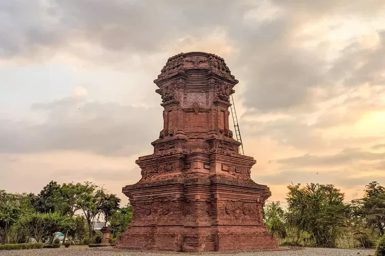

air-terjun-Madakaripura
Air Terjun Madakaripura di Probolinggo adalah keindahan alam yang menakjubkan di Taman Nasional Bromo Tengger Semeru. Terkenal sebagai air terjun tertinggi di Jawa Timur, air terjun ini menawarkan pemandangan spektakuler dari cekungan batu kapur yang tinggi. Suara gemuruh air yang jatuh menambahkan nuansa magis, sementara nilai sejarahnya sebagai tempat pertapaan legendaris menambah daya tariknya bagi pengunjung.
candi-jabung
Candi Jabung adalah situs sejarah yang kaya akan warisan budaya di Probolinggo, Jawa Timur. Candi ini merupakan salah satu peninggalan bersejarah dari masa lampau yang menarik minat para pengunjung untuk menelusuri kejayaan masa lalu Jawa. Dengan arsitektur yang megah dan detail ukiran yang menakjubkan, Candi Jabung menjadi saksi bisu dari peradaban yang berabad-abad lamanya. Kunjungan ke candi ini tidak hanya memberikan pengalaman berwisata yang unik, tetapi juga membuka jendela bagi kita untuk lebih memahami sejarah dan kekayaan budaya Indonesia.
Gunung-Bromo
Gunung Bromo adalah ikon alam Indonesia yang menakjubkan. Terletak di Taman Nasional Bromo Tengger Semeru, gunung berapi ini menampilkan lanskap yang epik dengan kawah aktif yang mengeluarkan asap putih. Pesona matahari terbit di puncak Bromo adalah pengalaman yang tak terlupakan bagi para pengunjung yang datang dari berbagai penjuru dunia. Keindahan alam yang dramatis dan petualangan hiking yang menantang menjadikan Gunung Bromo salah satu tujuan wisata terpopuler di Indonesia.
Museum-Moh-Saleh
Museum Moh Saleh di Probolinggo adalah pusat budaya yang menampilkan sejarah dan seni lokal. Dengan koleksi yang beragam, museum ini menghadirkan pengalaman yang mendalam tentang kehidupan dan budaya masyarakat setempat. Dengan pameran yang informatif, pengunjung dapat menikmati dan menghargai warisan budaya Probolinggo.
Ranu-Agung-Probolinggo
Ranu Agung di Probolinggo adalah sebuah danau alami yang menawarkan pesona alam yang memikat. Terletak di kaki Gunung Semeru, danau ini menawarkan pemandangan yang memesona dengan air yang jernih dan udara yang segar. Lokasinya yang strategis membuat Ranu Agung menjadi destinasi populer bagi para pendaki dan wisatawan yang mencari kedamaian dan keindahan alam. Dikelilingi oleh hamparan hutan hijau, danau ini merupakan tempat yang ideal untuk berbagai aktivitas seperti berkemah, bersepeda, atau sekadar menikmati keindahan alam yang memukau.